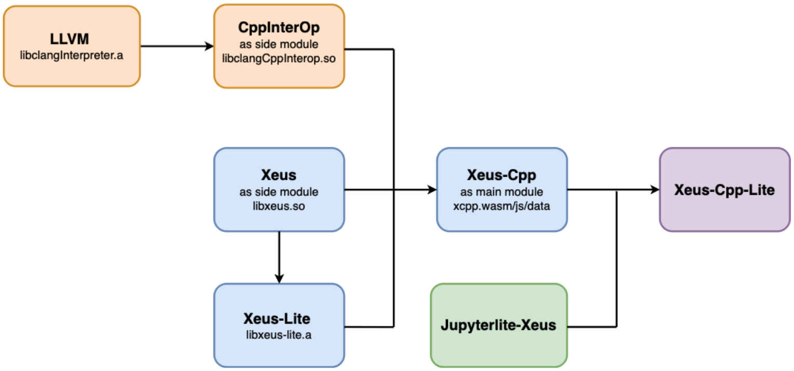
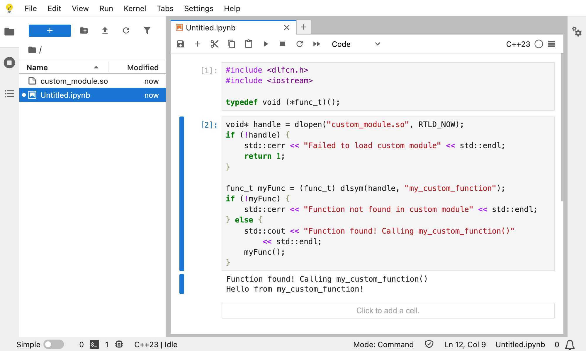

Runtime Execution: Native vs Wasm
Clang-Repl on Native Platforms
- Uses LLVM’s ORC JIT for runtime compilation
- Compiles code & executes directly from memory
Clang-Repl in the Browser
- WebAssembly enforces a strict sandbox model
- Can’t write or modify executable memory at runtime
- Memory is separated into code and data (Harvard architecture)
WASM backend for Clang-Repl
LLVM 17 introduced a WASM-specific IncrementalExecutor that avoids LLVM's ORC JIT
The new WasmIncrementalExecutor handles the wasm execution as follows:
- Each REPL input is parsed into a
Partial Translation Unit (PTU) PTUis lowered toLLVM IR, then compiled to a WASM object file- The object is linked with
wasm-ldinto a standalone binary (incr_module_x.wasm) - The side module is dynamically loaded with emscripten’s
dlopen, extending the main module
WASM backend for Clang-Repl
These modules:
- Share the same memory as the main
wasmmodule - Resolve symbols from earlier cells (cross-cell linking)
- Mimic dynamic linking, even though
WASMdoesn’t support shared libraries traditionally
🚀 This model effectively turned Clang-Repl into a live REPL for WebAssembly, enabling dynamic incremental C++ in the browser!
Xeus-Cpp-Lite Configuration

Fig: Configuration flow for Xeus-Cpp-Lite in the browser
Timeit Magic

Loading third-party/custom libs
1. Create a simple C++ module
Loading third-party/custom libs
2. Compile it to a WebAssembly shared object
Loading third-party/custom libs

Near Future Work
- Last Value Printing
- Point 2 (cuda support? ... image would do)
- Point 3 (debugger suport? ... video preferred)
- Point 4 (python interop? ... image would do)
- Point 5 (Multiple interpreters? ... image would do)